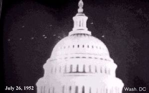

Carrousel de Washington (1952)
Observations radar et visuelles massives au-dessus de la capitale américaine en juillet 1952 — confirmées par des civils, des militaires et des pilotes de chasse. L'explication officielle est une inversion de température, vivement contestée par les spécialistes.

Contexte
En 1952, les États-Unis font face à une vague d'observations d'OVNIs sans précédent, débutée en avril. L'équipe du projet Blue Book — l'enquête officielle de l'USAF sur les OVNIs — est débordée par les signalements en provenance de tout le pays. Le pic de la vague se situe en juillet. C'est dans ce contexte que se produisent, deux semaines de suite, des observations au-dessus même de Washington D.C.
Les faits
Nuit du 19 au 20 juillet 1952
En soirée, cinq sphères lumineuses volant au-dessus de la ville sont vues par de nombreux habitants. À 23h40, sept échos apparaissent sur les écrans radar de la base d'Andrews, confirmés peu après visuellement. Leur vitesse varie de 160 à près de 500 km/h, avec des accélérations relevées à des vitesses supérieures à Mach 10. Les échos sont confirmés simultanément par l'aéroport national de Washington et par les bases aériennes de Bolling et d'Andrews. Des chasseurs Lockheed F-94 Starfire sont envoyés en interception. Les pilotes confirment visuellement la présence des sphères et leurs importantes variations de vitesse. Le phénomène se poursuit jusqu'à 5h du matin, observé à la fois par des habitants au sol, des pilotes en vol et des opérateurs radar.
Nuit du 26 au 27 juillet 1952
Le phénomène reprend toute la nuit, dans des proportions similaires. De nouveaux chasseurs sont envoyés. À plusieurs reprises, les objets semèrent les avions de chasse, puis revinrent se positionner au-dessus de la ville une fois les avions éloignés. Le phénomène est à nouveau confirmé en visuel et au radar par des civils et des militaires, au sol comme dans les airs. Des observations de moindre ampleur ont aussi lieu la nuit du 2 au 3 août.
L'explication officielle : inversion de température
Le 29 juillet, une grande conférence de presse est organisée au Pentagone, avec notamment Edward J. Ruppelt, chef du projet Blue Book. L'USAF explique que le phénomène est dû à une inversion de température : une couche d'air chaud prise en sandwich entre deux couches plus froides aurait provoqué un effet de mirage, réfléchissant des ondes radar et réfractant des rayons lumineux venus du sol.
Cette explication est celle retenue officiellement à ce jour. Elle permet de classer l'affaire comme élucidée : pas d'objet physique, seulement un artefact atmosphérique.
Les limites de l'explication officielle
Dès la publication de cette explication, de nombreux météorologues et contrôleurs radar la contestent. Leurs arguments principaux :
- Une inversion de température ne génère des échos radar que dans des conditions météorologiques très spécifiques et extrêmes — conditions qui n'étaient pas réunies ces nuits-là à Washington.
- Les contrôleurs radar habitués à ce type de phénomène soulignent qu'une inversion produit un « nuage d'échos très faibles », peu mobile, évoluant lentement d'un seul bloc — rien à voir avec les cibles nettes, distinctes et autonomes observées les 19 et 26 juillet, dont certaines évoluaient indépendamment des autres à des vitesses et trajectoires très différentes.
- En 1967, le physicien James McDonald analyse les données de radiosondage des deux nuits et conclut que des retours radar par propagation anormale « n'auraient pas pu avoir lieu » dans ces conditions. Il qualifie d'« absolument absurde » l'idée qu'une telle inversion ait pu provoquer les effets visuels rapportés.
- Ruppelt lui-même reconnaîtra par la suite que lui et de nombreux officiers de l'armée américaine étaient loin d'avoir été convaincus par cette version officielle, et que certains dans leurs rangs étaient convaincus de la nature non-terrestre des phénomènes.
Le comportement des objets
Au-delà du débat sur les radars, c'est le comportement observé des phénomènes qui pose le problème le plus difficile à l'explication atmosphérique :
- Accélérations à des vitesses supérieures à Mach 10, puis arrêts nets.
- Changements de trajectoire abrupts et à grande vitesse.
- Comportement adaptatif : les objets semaient les avions de chasse, puis revenaient se positionner au-dessus de la ville dès que les chasseurs s'éloignaient.
- Un objet a suivi un avion de ligne pendant quelques instants.
- Observation simultanée et cohérente par des témoins indépendants : opérateurs radar, pilotes en vol et civils au sol.
Pistes d'analyse
Croiser les données radar des trois stations (Andrews, Bolling, aéroport national) avec les témoignages des pilotes du F-94. Examiner les données météorologiques (radiosondages) des nuits des 19 et 26 juillet 1952 pour évaluer la thèse de l'inversion de température. Comparer la description des échos (intensité, mobilité, cohérence) avec les signatures connues des artefacts radar atmosphériques. Évaluer la portée de la rétractation implicite de Ruppelt sur la crédibilité de la version officielle.